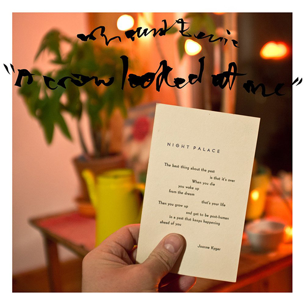
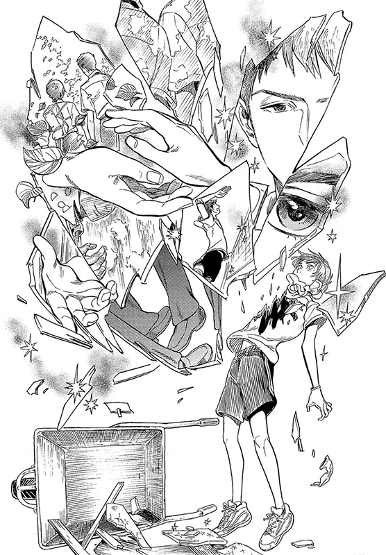

¿Conocés nuestras recomendaciones?
Te dejamos pedacitos nuestros.
NUESTRA RECOMENDACIÓN DE DE ESTA SEMANA
A CROW LOOKED AT ME
Hablemos de «A Crow Looked at Me», un trabajo firmado por el norteamericano Phil Elverum con este proyecto titulado Mount Eerie donde narra el día a día de su vida en el antes y después del fallecimiento de su esposa. Un trabajo que en base a su temática y cadencia melódica recuerda a otros brillantes LPs en los últimos años como el «Carrie & Lowell» de Sufjan Stevens o el melodramático «Benji» de Sun Kil Moon. Con uno de los primeros singles de este A Crow Looked at Me, “Real Death”, Mount Eerie abre un álbum que con referencias a canciones que marcaron su vida, trata una problemática sobre la cual se hace áspero expresar una crítica meramente musical. Y es que este álbum podría tenerse como una retrospectiva con carácter documental en el que se detalla un diario acerca de una enfermedad y su camino a la inevitable muerte. Un trabajo que ocupa un lugar difuminado entre el arte, el ensayo filosófico y la propia música. Sentencias que te hacen vivir en una realidad ajena y te sacuden los adentros como cuando recita: «it’s dumb / and I don’t want to learn anything from this / I love you«. Como se puede observar, no sólo la referencia a la muerte inunda cada texto sino también el amor incondicional sobre todo aquello. Elverum dispensa florituras poéticas significativas, nada superfluas. Junto a ello, detalles de fechas y diálogos que posan la esencia del álbum sobre un contexto absolutamente real y cercano. A veces las canciones tornan en un misticismo desconcertante («Soria Moria»); en otras ocasiones, la propia conciencia del abandono por parte de ella («Ravens») y la vuelta al hogar «vacío» tras sus cenizas, nos dibuja escenas tan nítidas como sobrecogedoras. La narración sobresale a la música que en ocasiones pese a bonitos arreglos de cuerda y percusión medida, queda en un segundo plano, como si fueran tus ojos andando al acecho de su dolor. Podríamos afirmar que es un álbum folk/rock de una dimensión social y sentimental de matricula de honor y que arrastra por la pechera al oyente desde su primera escucha.
SHIMANAMI TASOGARE
At the peak of a steep hill, in the picturesque Onomichi town, stands a building with a lounge open to all. An unusual group of friendly people gathers there, each with their own stories to tell. Tasuku Kaname is a troubled high school student who is prepared to commit suicide because his classmates found out that he might be gay. As he questions his existence, the sight of a mysterious woman jumping off a nearby building leaves him utterly startled. He rushes to the scene only to discover her unharmed, soon learning that she is the owner of the aforementioned building, known to everyone as "Anonymous." Anonymous notices Tasuku's nervous temperament and offers him an ear if he is willing to share his problems. While speaking to her, he realizes that the most painful thing is his inability to accept his sexuality. Emotional and heartfelt, Shimanami Tasogare is a realistic take on the struggles of Tasuku among other lesbian, gay, bisexual, and transgender people in coming to terms with their selves. [Written by MAL Rewrite]